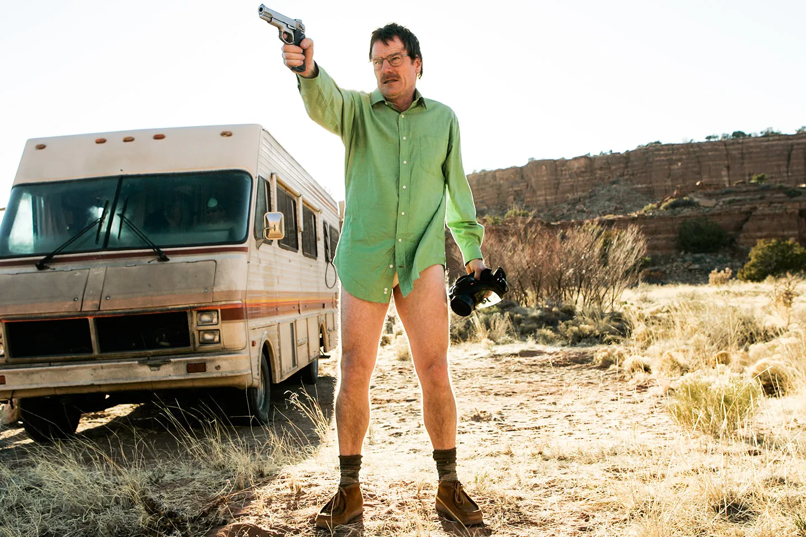
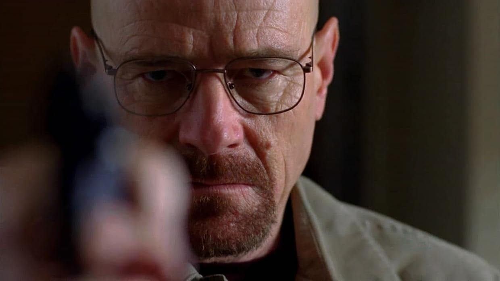
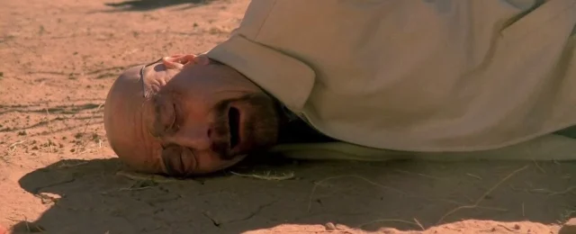
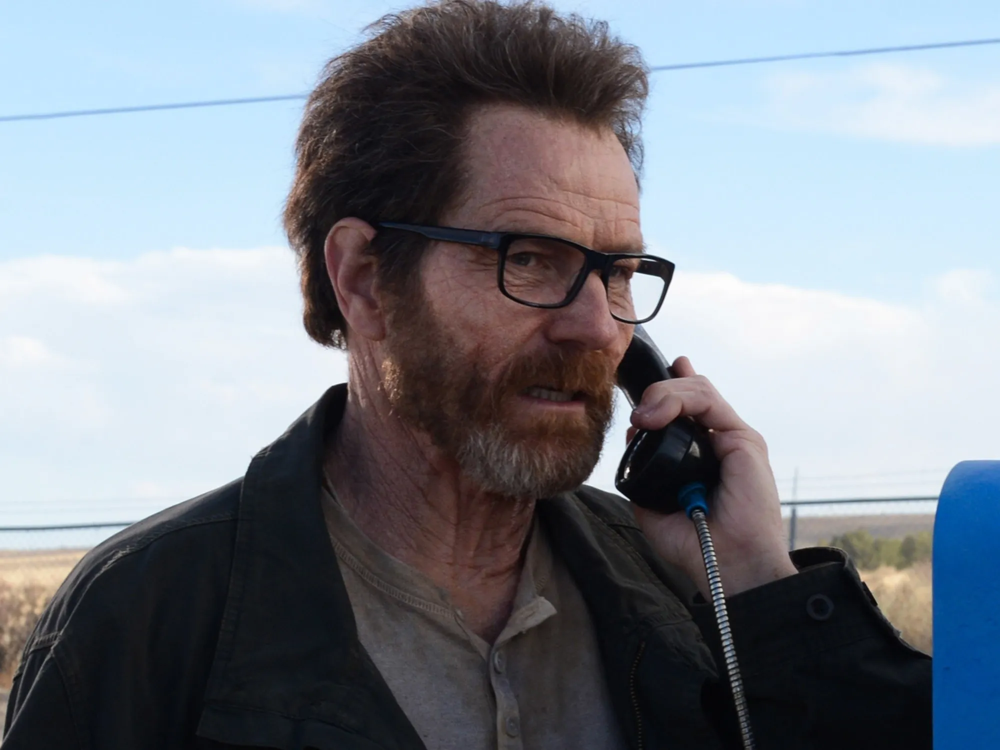

Walter White
 Inicios: Profesor y Padre Frustrado
Inicios: Profesor y Padre Frustrado
Walter Hartwell White es un profesor de química en Albuquerque, Nuevo México. A sus 50 años, vive una vida tranquila y frustrada, con grandes sueños científicos abandonados y una situación financiera precaria. Aunque es un químico brillante, se ha relegado a un modesto salario de profesor de secundaria. Trabaja también en un lavadero de coches para complementar sus ingresos, lo cual es motivo de humillación para él, especialmente frente a sus propios estudiantes. Su matrimonio con Skyler White, quien está embarazada de su segundo hijo, se encuentra bajo presión debido a sus problemas financieros y su propio sentimiento. Su vida da un giro brusco cuando le diagnostican un cáncer de pulmón en estado avanzado e inoperable. Afligido por el diagnóstico, Walter se encuentra de pronto enfrentado a la posibilidad de dejar a su familia sin apoyo económico tras su muerte. Esta noticia desata una profunda crisis existencial en Walter, quien hasta entonces había aceptado su papel como un hombre humilde, aunque insatisfecho. Ahora, siente una urgencia por hacer algo significativo, no solo para garantizar el bienestar de su familia, sino también para reafirmarse a sí mismo como alguien que puede tener control sobre su destino.
 La Decisión y el Surgimiento del HeroeImpulsado por esta desesperación, Walter decide utilizar su conocimiento en química para fabricar metanfetaminas, viendo en el tráfico de drogas de una manera rápida y efectiva de obtener dinero. Contacta a un exalumno suyo, Jesse Pinkman, un pequeño traficante que tiene contactos en el mundo de las drogas. Walter y Jesse forman una sociedad disfuncional: mientras Walter se encarga de la fabricación con su nivel de calidad extremadamente alto, Jesse se ocupa de la Para proteger su identidad, Walter adopta el alias de "Heisenberg", un nombre que poco a poco se convierte en su alter ego y símbolo de poder en el submundo del narcotráfico. A través de "Heisenberg", Walter comienza a experimentar una liberación de la moralidad y los límites éticos que alguna vez definieron su vida. A medida que su negocio crece y se vuelve cada vez más peligroso, Heisenberg se convierte en una identidad que simboliza su lado oscuro y ambicioso, dispuesta a todo por proteger lo que Walter y Jesse logran producir una metanfetamina de altísima pureza, que rápidamente se hace famosa por su distintivo color azul y su potencia. Esta coloca a Walter en el radar de poderosos narcotraficantes, y pronto comienzan los conflictos de poder. Su habilidad como química le permite sobresalir, pero su inexperiencia en el mundo del crimen lo lleva a situaciones peligrosas y aterradoras. Conforme avanza su negocio, Walter se enfrenta a una serie de enemigos, incluido Tuco Salamanca, un traficante violento e impredecible. Sin embargo, su rival más temido será Gus Fring, un respetado empresario que, bajo la apariencia de dueño de la cadena de comida rápida Los Pollos Hermanos, dirige una red de tráfico de drogas altamente organizada y profesional. La relación entre Walter y Gus es compleja; aunque al principio son aliados, pronto se convierte en una guerra silenciosa llena de manipulación y estrategias, en la que Walter finalmente debe utilizar su ingenio para destruir a Gus y tomar el control.
 Desgaste y deterioro familiarA lo largo de su camino, el costo de las decisiones de Walter comienza a afectar profundamente a su familia. Skyler, su esposa, descubre sus actividades y queda horrorizada por su transformación. Aunque al principio intenta alejarse, termina involucrándose en el lavado de dinero y otros aspectos de su negocio, pero su relación con Walter se vuelve cada vez más fría y distante. Skyler pasa de ser una esposa protectora y comprensiva a alguien que debe proteger a sus hijos de las decisiones cada vez más peligrosas de Walter Jr., el hijo de Walter y Skyler, admira profundamente a su padre y no sospecha la verdad sobre sus actividades. Sin embargo, el comportamiento errático de Walter y la tensión familiar que crea su doble vida lo desconciertan. Walter intenta ocultar su vida criminal a sus hijos, pero la mentira comienza a desmoronarse cuando Skyler y luego Hank, su cuñado y agente de la DEA, descubren su identificación.
 La Caída: La Verdad Revelada y la RuinaLa obsesión de Walter con el poder y su deseo de ser reconocido como alguien capaz de controlar su destino lo llevan a arriesgarlo todo. Finalmente, su cuñado Hank Schrader descubre que el “Heisenberg” al que tanto ha estado persiguiendo es, de hecho, su propio cuñado, lo que desata una serie de eventos trágicos. En su intento de encubrir sus acciones y protegerse, Walter toma decisiones cada vez más desesperadas Cuando todo su mundo comienza a derrumbarse, Walter huye, quedando solo y enfermo. En sus momentos finales, se da cuenta de que gran parte de sus acciones fueron motivadas por su propio ego y ambición, y no solo por el bienestar de su familia como solía decir. Finalmente, regresa para intentar poner fin a los conflictos que ha creado y liberar a Jesse, quien se convirtió en una víctima colateral de sus decisiones. En un último acto de redención, Walter sacrifica su vida en un intento de proteger a Jesse y eliminar a quienes habían amenazado su vida y la de
 El legado de WalterLa historia de Walter White es una exploración de hasta qué punto una persona puede cambiar bajo la presión de circunstancias extremas y cómo las decisiones que parecen pequeñas y justificadas pueden llevar a consecuencias devastadoras. Su transformación de "Mr. Chips a Scarface" no solo es un reflejo de su ego y ambición, sino también una tragedia que muestra el alto costo del poder y el control. Walter White se convierte en una de las figuras más complejas y cautivadoras de la televisión, un personaje que logra suscitar tanto empatía como rechazo por su implacable descenso a la oscuridad. Esta historia de autodestrucción y arrepentimiento sigue siendo una de las más impactantes, ya que muestra cómo el deseo de trascender y la necesidad de dejar una huella pueden llevar a alguien a perderse en un camino sin retorno. Walter White pasa de ser un hombre corriente a uno capaz de las peores atrocidades en su intento de escapar de una vida que considera insuficiente. A través de su transformación en "Heisenberg", Walter revela hasta dónde puede llegar la oscuridad humana cuando se combinan la desesperación y la Finalmente, aunque Walter logra una especie de redención personal en sus últimos momentos, el daño que ha causado a su familia ya sí mismo es irreversible. El legado de Walter White es complejo: para algunos es un hombre que, aunque erróneamente, luchó por su familia; para otros, es una advertencia sobre los peligros del poder y la arrogancia. Su historia sirve como un recordatorio de cómo las decisiones, incluso aquellas que comienzan con buenas intenciones, pueden llevarnos a lugares oscuros.